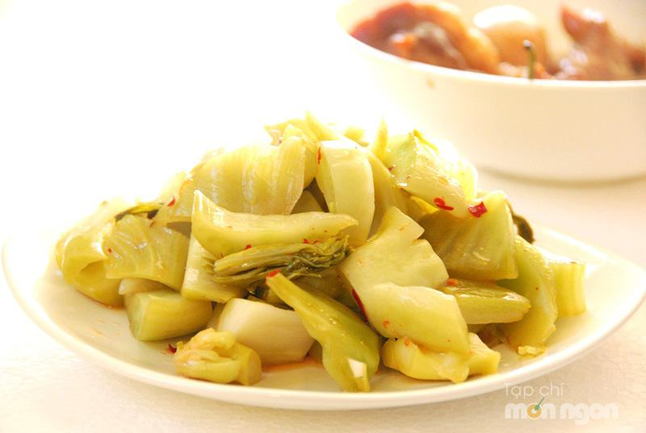

Cùng bắt tay làm thử thôi nào!
Nguyên liệu:
- 1kg cải bẹ
- 40g đường vàng, mì chính
- 40g muối
- Hành lá, tỏi, ớt, 1 củ riềng nhỏ
- Dấm hoặc chút nước muối dưa đã chua (nếu muốn dưa nhanh được ăn)
Cách làm:
Rau cải bẹ chọn cây có bẹ lá to, không bị sâu, úa. Rau mua về tách rời từng lá, rửa sạch đất cát.
Xếp cải ra khay phơi một nắng cho hơi héo.
Sau đó rửa lại cho sạch bụi bẩn rồi cắt nhỏ vừa ăn, vẩy cho ráo nước, hành lá rửa sạch, cắt đoạn nhỏ bằng chiều dài miếng rau cải, trộn chung rau cải và hành lá với nhau.
Pha nước muối dưa: 1,2 lít nước, 40g đường vàng, 40g muối, một chút mì chính, khuấy tan rồi nếm thử có vị lợ lợ là được.
Cho dưa cải vào thố, thêm nước muối cho ngập cải, riềng tỏi ớt rửa sạch thái lát mỏng rắc lên trên rồi dùng 1 đĩa đè lên cho cải được ngập trong nước muối.
Nếu muốn dưa nhanh chua, bạn có thể cho thêm chút dấm hoặc nước muối dưa có sẵn nhé!
Đậy kín, để khoảng 2-3 ngày cho dưa chua, vàng đều là có thể ăn được.
Mách bạn:
Để dưa muối không bị nổi váng, bạn lưu ý vật chứa phải thật sạch nhé. Một chút mì chính sẽ giúp dưa muối rất ngon đấy! Muốn dưa để được lâu thì sau khi dưa chua vừa ăn, bạn cho hũ dưa vào tủ lạnh, ăn hết bạn có thể chừa lại chút nước để lần sau muối tiếp cho vào dưa sẽ nhanh chua hơn.
Dưa muối có thể ăn như một món rau kèm với các món thịt, hoặc dùng làm nguyên liệu cho nhiều món canh chua, món om, món kho như: cá chép om dưa, dưa nấu sườn, dưa kho thịt, canh dưa chua thịt bò...
Chúc bạn thành công và có món dưa muối thật ngon nhé!